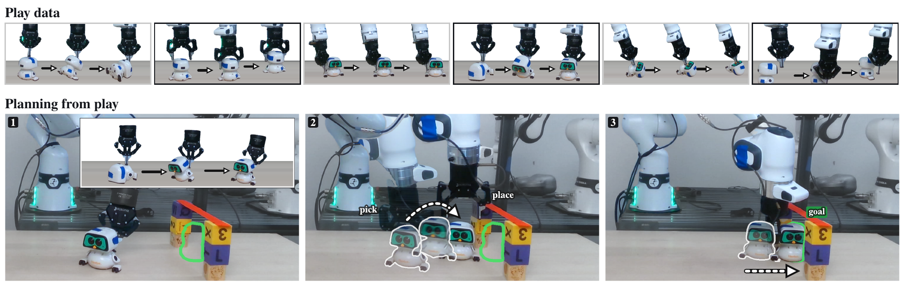
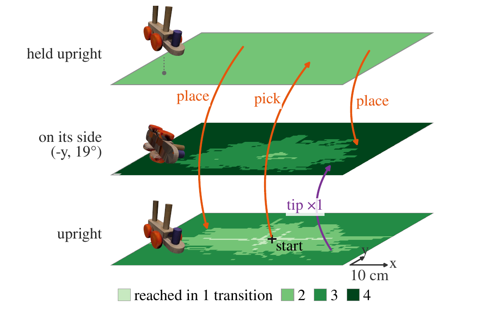
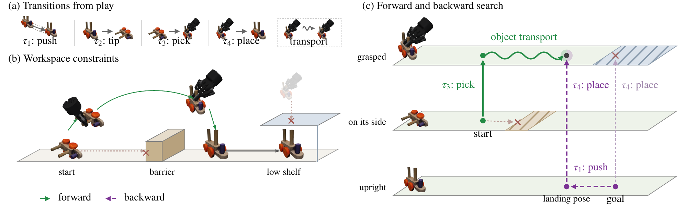
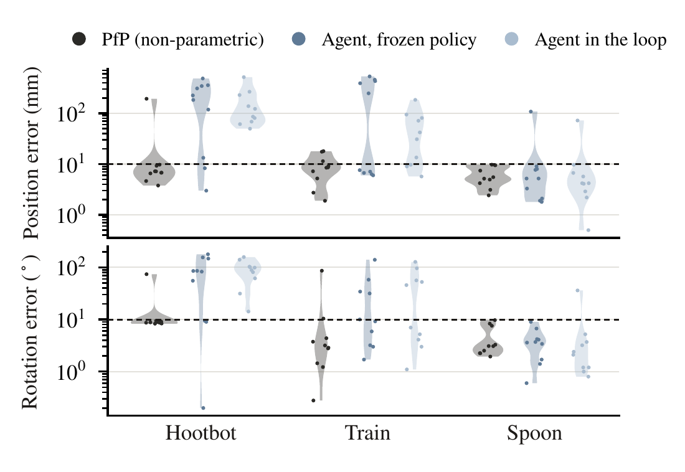
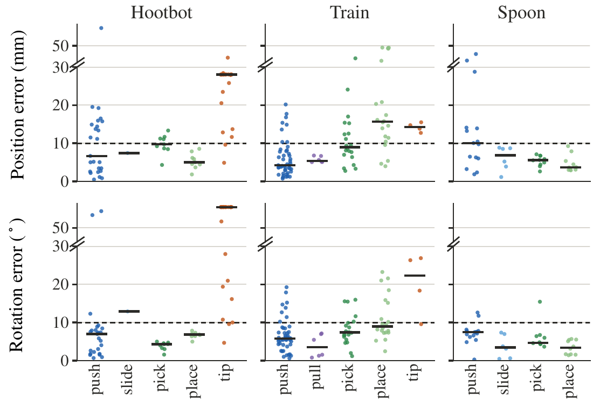

Planning from Play
Composing Interactions for Manipulation through Contacts and Constraints
Under review

Video
Summary
A few minutes of task-agnostic play provide an object-specific model of contact dynamics. The robot's kinematic model and a depth scan of the scene enable reachability checks, collision checking, and collision-free arm motion.
Key takeaways
- Minutes of play are enough. 5 to 11 minutes per object support plans of up to 14 interactions, with new goals and obstacles.
- Learn only what is hard to model. Contact outcomes come from play. Reachability, collisions and free-space motion come from the robot model and scene geometry.
- Express interactions relative to the object. A push recorded at one spot becomes a candidate push anywhere on the table.
- Search, then replan. Replanning after every transition absorbs execution error. Search finds detours that a greedy controller would miss.
Method
1. Play becomes transitions
- Play with no task in mind. An operator pushes, slides, tips and picks the object.
- Cut where the object is at rest. On a face on the table, or grasped.
- Record everything relative to the object. The gripper motion and the object displacement, in the object's own frame.
2. Transitions apply everywhere on the table
- Same effect at any planar pose. As long as the object rests on the same face.
- One pose manifold per resting face or grasp. Recorded tips, picks and places connect the manifolds.
- The result is an optimistic graph.

3. The scene decides what is feasible
- Scan the scene once. Depth cameras give the obstacle geometry.
- Keep only feasible transitions. The object clears obstacles, and the arm can follow the motion without collisions.
- Search from both ends. Forward from the start and backward from the goal, meeting at a recorded interaction. Plans are scored by their interactions and object motion, plus the remaining distance to the goal pose.

4. Execute one transition, then replan
- Execute one transition. A motion planner moves the arm into and out of contact.
- Observe, then check the rest of the plan. Replan from the observed pose if it no longer works.
- Replanning closes the gap. Recorded outcomes are off by about 7 mm and 3° on the robot.
Real robot
- A bridge never seen in play. Three objects must end up under it.
- Reorientation first. The Hootbot and the train start on their sides.
- 26 of 30 trials succeed. Within 10 mm and 10°, with a median of five interactions.
Pick an object and a method. Trial numbers are the same for all methods, so the same trial starts from the same pose.
- Plans step away from the goal when needed. In 12 of 26 successes a transition moves the object more than 10 mm away, for example to set up a grasp the bridge would block.


Disturbances and new layouts
- Pushed away, then replanned. The plan continues from wherever the object lands.
- New obstacle layouts and goals. The same play data, with no new recording.
- Longer plans. Up to 23 interactions, mixing pushes with picks and places.
Simulation
- Five tasks, 50 random starts each. Over barriers, under shelves and through narrow passages.
- Reusing play data matches learning a model. Non-parametric 84% versus parametric 86%.
Simulated play
- Scripted instead of teleoperated. A coding agent wrote one motion primitive per interaction type: push, slide, tip and grasp.
- Parameter sweeps. Each primitive runs over a small grid of approach directions, contact heights, stroke lengths and grasp offsets, from several starting orientations and resting faces.
- Same processing as real play. Each run is recorded and cut into transitions, as with teleoperated play.
- No task obstacles. Play runs on an open table. Transfer Book's play runs on the platform without the ridge, because the book can only be grasped where it hangs over an edge.
Ten starts per task. The non-parametric clips are ten of its successes. The parametric variant and the agents are shown on the same ten starts, whatever the outcome. Clips show simulated motion only, without planning or inference time, sped up as labeled.
Comparison with a coding agent
- Same inputs as Planning from Play. Play data, obstacle geometry, motion planner and camera images, given to Claude Opus 5.5.
- Frozen policy. 30 minutes to write and test a program, which then runs unchanged.
- In the loop. A fresh session controls the robot for ten minutes per start, without resets.
| Park Train | Transfer Book | Tip Block | Topple Cup | Tuck Spoon | Hootbot | Train | Spoon | |
|---|---|---|---|---|---|---|---|---|
| Planning from Play | ||||||||
| Non-parametric | 92 | 82 | 62 | 92 | 90 | 90 | 70 | 100 |
| Parametric | 96 | 100 | 56 | 86 | 92 | – | – | – |
| Coding agent | ||||||||
| Frozen policy | 40 | 77 | 11 | 71 | 49 | 20 | 50 | 90 |
| In the loop | 12 | 40 | 2 | 2 | 64 | 0 | 30 | 90 |
Success rate (%). The first five columns are simulation (50 starts, 10 mm and 5°), the last three the real robot (10 starts, 10 mm and 10°). Bold marks results whose 95% Wilson interval overlaps the best in the column.
- The frozen policy does better. 49% versus 24% in simulation, and 16 versus 12 of 30 on the robot. It can reset the scene and refine one strategy, while in the loop every failure leaves the object somewhere new.
- Resets are scarce on the robot. 2 to 6 resets in 30 minutes, against 14 to 71 in simulation.
- Both do well on top-down pick and place and nudging. As on Spoon and Tuck Spoon.
- Both struggle with reorientation through contact. Park Train, Tip Block and the Hootbot. Planning from Play already has the tipping outcomes in its play data.
- Agent failures end far away. Often on the wrong face, while Planning from Play's failures stop close to the goal.
To watch the agent, switch the method in the real-robot and simulation players above.
Limitations
- A uniform table. Interactions are assumed to have the same effect anywhere on a flat surface with roughly uniform friction.
- Good pose estimates. The object pose must be measured after every transition.
- No reaction within a transition. Replanning happens only between transitions.